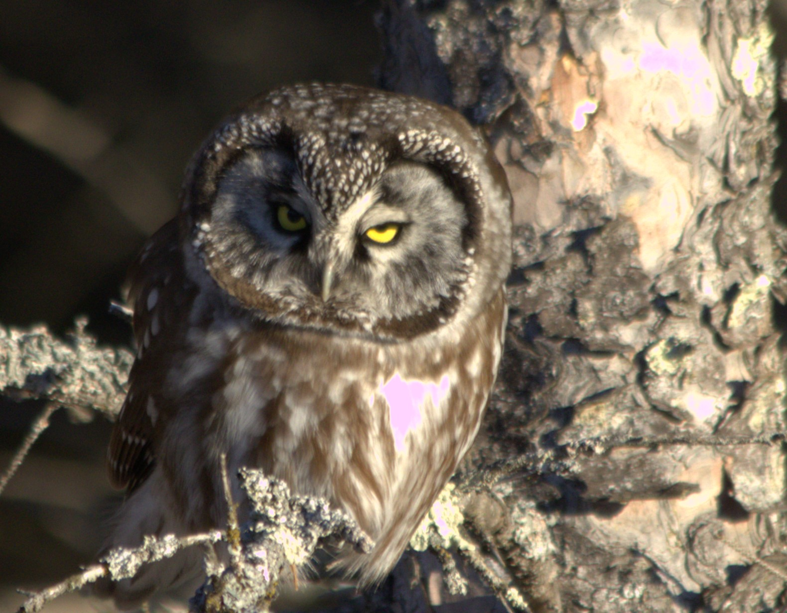
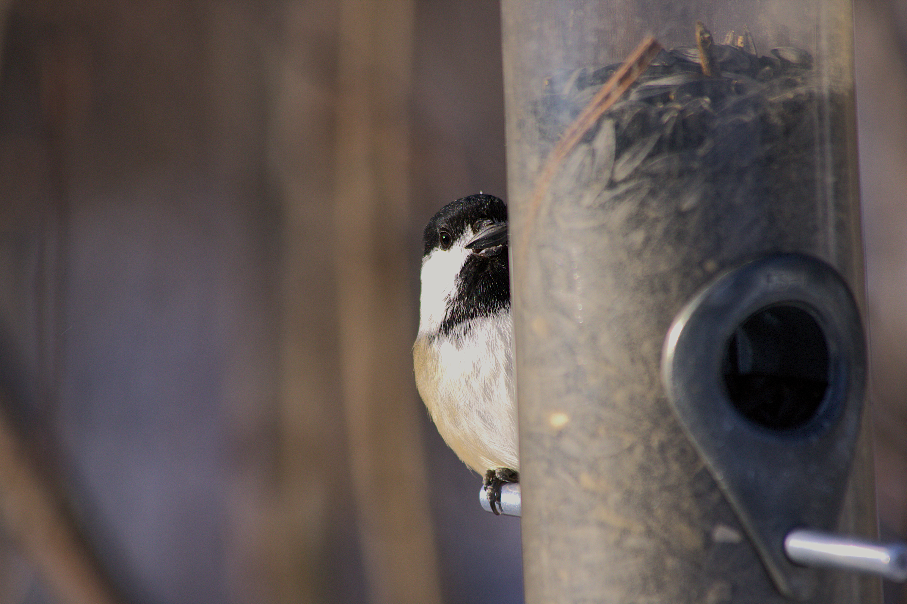

Hi i am Noah Anderson
This web page shows some of my favorit bird photos I have taken well also learing HTML and CSS
click the images for more info about each bird
Hope you like it
1. Boreal Owl
 S
I saw this with
my Dad , Sister and Cousin
we say it just a few miles
off a Two Harbors Minnesota
on (date)
This is such a amazing owl
and was so cool to see
2. Black Capped Chikadee

3. Little Blue Heron